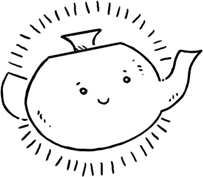
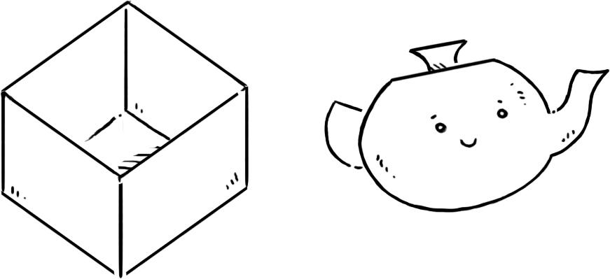

Paradise was originally written in Ruby, it was available as a multi-user server between 2011 and 2016. I spent some of my favourite days online interacting with players and the worlds that they built. Thanks to everyone who made this place so unique and for the good times.

Paradise is an interactive-fiction playground.
In Paradise, you are but a force acting upon places, objects, words — vessels. Paradise is a kind experimental file-system and operating system.
I have always imagined that Paradise will be a kind of library.Jorge Luis Borges
Parade is the primitives of Paradise.
The goal of this project is to build a lightweight computing environment able to navigate a sea of vessels, run code and exchange content with other Parade instances, via the basic primitives.The entire system is designed to be implemented in rewrite rules.
| create | become | enter | leave |
| take | drop | move | look |
| note | transform | program | use |
Create
In this filesystem, there are no "users", "files" or "applications", everything is a vessel. A vessel is an object that can act onto other vessels, possibly carrying vessels, and has its own permissions. A user, is a vessel being acted upon. To create a new vessel:
You are a ghost in a library. | create a teapot You are a ghost in a library. You see a teapot.

Become
A new vessel responds to the basic primitives, and visible vessels might append to that list with actions of their own. The vessel format serves endpoints that responds to actions. For instance, a telephone vessel, might respond to the action call, as in the command "call Alice".
You are a ghost in a library. You see a teapot. | become the teapot You are a teapot in a library. You see a ghost.
Enter
There is no linear hierarchy tree, instead vessels can be within themselves or each other, or even organized in the shape of a loop. Pockets of space can be hosts to vessels existing around a common purpose, or carried around inside another vessel as you would a tool-belt or an inventory, giving the acting vessel, or user, additional actions appended to the list of primitives. To enter a visible vessel:
You are a ghost in a library. You see a box. | enter the box You are a ghost in a box.

Leave
Leave moves your vessel back to the parent vessel. You may not leave if your vessel is within itself.
You are a ghost in a box. | leave You are a ghost in a library. You see a box.
Take
Take moves a visible vessel into your vessel, you make not take a vessel if your vessel is within itself.
You are a ghost in a library. You see a haunted house. | take the haunted house You are a ghost in a library. You carry a haunted house.

Drop
Drop moves a vessel out of your vessel and into the parent vessel, you make not drop a vessel if your vessel is within itself.
You are a ghost in a library. You carry a haunted house. | drop the house You are a ghost in a library. You see a haunted house.
Move
Move a visible vessel into another visible vessel.
You are a ghost in a library. You see a bottle and a moth. | move the moth into the bottle You are a ghost in a library. You see a bottle.
Look
Passive action that displays the visible vessels.
look You see: > teapot > house > moth > sphere > |

Transform
Change your vessel's name.
You are a ghost in a library. | transform into a cat You are a cat in a library.
Note
Assign a description to the parent vessel.
note The inside of the teapot is stormy. > |

Warp*
Warp to a distant vessel with a specific name.
warp to the library > |

Program
Assign an automation to the parent vessel.
create a coffee > |

Use
Use the automation of a visible vessel.
use the coffee machine > |

Further
One of the goals of this operating system is to be fully operable by voice, think screenless computing. The navigation is designed to be used via simple text commands, there would be nothing quite like windows. Vessels could display passive content when in sight, allowing to create a form of procedural user interface, but the system itself does not have a concept of windows, like you would in a typical graphical operating system with a wm.
While the navigation of the system can be done by voice alone, the terminal, when presented on a screen, begins with a prompt, to which can be appended a history of responses, or even a display area for graphics when a vessel is serving a game or a movie.

A Network of Parade systems would be traversible(read-only) by an acting vessel. The Parade's typical behaviours for moving about will persist onto the remote systems so, a vessel can move, enter, use remote vessels and suggest changes to the host world as commits — All the while, respecting the host's vessel permissions. For instance, a vessel might make itself usable by a visiting vessel, but will not let itself be moved or altered.
warp to the lobby@29:03:25:76 > |
- source, Modal.
- live, web version(source)
- Virtual-world-inspired Programming Language Design
incoming ehrivevnv studies maeve verreciel rekka